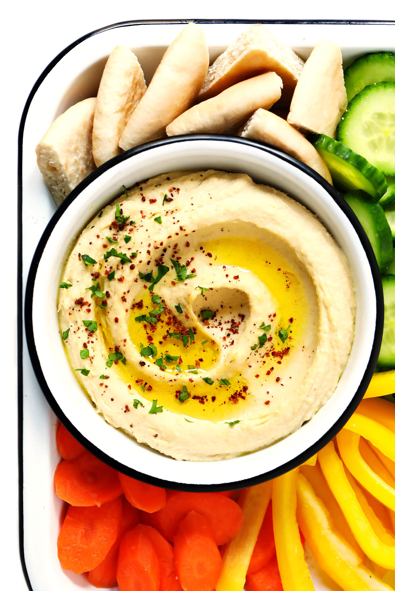

This recipe makes quick, tasty hummus, with no messing. It has been adapted from a number of different recipes that I have read over the years.
Hummus is a delicious thick paste used heavily in Greek and Middle Eastern dishes. It is very tasty with salad, grilled meats and pitta breads.
1 can (400g) of chick peas (garbanzo beans) 175g of tahini 6 sundried tomatoes Half a red pepper A pinch of cayenne pepper 1 clove of garlic A dash of olive oil